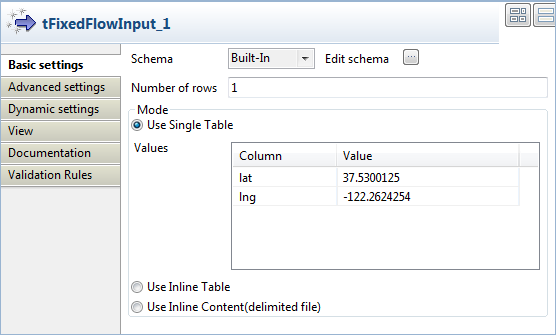
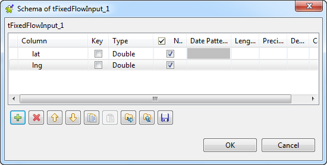

Avertissement
Ce composant est disponible dans la Palette du studio si vous avez souscrit à l'un des produits Talend Platform.
|
Famille de composant |
Data Quality/Address | |
|
Fonction |
Le composant tGoogleMapLookup accède à l'API Google Geocoding via une requête HTTP afin d'obtenir des informations géographiques détaillées selon les coordonnées géographiques que vous avez fournies.
NotePour plus d'informations concernant l'API Javascript Google Map, consultez The Google Map Javascript API V3 (en anglais).
| |
|
Objectif |
Le tGoogleMapLoopup vous permet d'obtenir des informations géographiques détaillées, à l'aide de coordonnées géographiques et d'adresses. | |
|
Basic settings |
Schema et Edit Schema |
Un schéma est une description de lignes, il définit le nombre de champs qui sont traités et passés au composant suivant. Le schéma est soit local (built-in) soit distant dans le Repository. |
| Sync columns | Cliquez sur le bouton afin de récupérer le schéma du composant précédent dans le Job. | |
|
Pause(in 1/10 seconds) |
Temps de pause entre les requêtes HTTP pour les enregistrements relatifs aux informations géographiques. Par défaut, la valeur de ce champ est 1. | |
| Latitude Column | Sélectionnez la colonne du schéma contenant les informations de latitude. | |
| Longitude Column | Sélectionnez la colonne du schéma contenant les informations de longitude. | |
|
Advanced settings |
import |
Personnalisez ce champ pour importer une classe Java pour le tGoogleMapLookup. Par défaut, vous n'avez pas à modifier cette partie. |
| tStatCatcher Statistics |
Cochez cette case pour collecter les données de log au niveau du composant. | |
| Enable parallel execution |
Cocher cette case permet de traiter plusieurs flux de données simultanément. Cela permet de traiter les données plus rapidement. Dans le champ Number of parallel executions, vous pouvez : - Saisir le nombre d’exécutions parallèles désiré - Appuyer sur Ctrl+Espace et sélectionner la variable de contexte dans la liste. Pour plus d’informations, consultez le Guide utilisateur de Talend Data Integration Studio. AvertissementLes actions sur la table (Action on table) ne sont pas disponibles avec la fonction de parallélisation. Ainsi, pour créer une table, vous devez utiliser un composant tCreateTable. AvertissementLorsque l’exécution parallèle est activée, il n’est pas possible d’utiliser les variables globales pour retrouver les valeurs de retour dans un sous-job. | |
|
Utilisation |
Ce composant est un composant intermédiaire. Il nécessite un composant d'entrée, un composant de sortie et un lien Main Row. | |
Ce scénario décrit un Job a trois composants envoyant une requête HTTP à l'API Google Geocoding et obtenant des informations géographiques détaillées à partir des coordonnées géographiques fournies.

Déposez les composants suivants de la Palette dans l'espace de modélisation graphique : tFixedFlowInput, tGoogleMapLookup et tLogRow
Reliez le tFixedFlowInput au tGoogleMapLookup et le tGoogleMapLookup au tLogRow à l'aide de liens Main.
Double-cliquez sur le tFixedFlowInput pour afficher sa vue Basic settings et configurer ses propriétés.
Cliquez sur Edit schema afin d'ouvrir une boîte de dialogue affichant la structure des données d'entrée. Définissez les données que vous souhaitez passer au composant tGoogleMapLookup, deux colonnes dans ce scénario, lat et lng, respectivement, contenant les coordonnées géographiques.
Dans la colonne Type, pour lat et lng, sélectionnez Double. Laissez les autres champs tels qu'ils sont. Cliquez sur OK pour fermer la boîte de dialogue.
Dans la zone Mode de la vue Basic settings du composant tFixedFlowInput, sélectionnez Use Single Table. Dans le champ Value de la colonne lat, saisissez
37.5300125. Pour la colonne lng, saisissez-122.1614254.Double-cliquez sur le composant tGoogleMapLookup afin d'afficher sa vue Basic settings et configurer ses propriétés.

Sélectionnez les colonnes de latitude et longitude définies dans le schéma d'entrée, respectivement lat et lng et laissez les autres champs tels qu'ils sont.
Double-cliquez sur le tLogRow pour afficher sa vue Basic settings et configurer ses propriétés.

Sélectionnez Vertical (each row is a key/value list) dans la zone Mode puis Print unique name dans la zone Title printing mode.
Sauvegardez votre Job et appuyez sur F6 pour l'exécuter.
Note
Une limite de 2500 requêtes de géolocalisation par jour pour la même adresse IP est appliquée par Google, même si aucune clé Google API n'est requise par l'API Geocoding (V3). Pour plus d'informations concernant les limites d'utilisation de l'API Geocoding, consultez Usage Limits dans The Google Geocoding API (en anglais).

Les informations géographiques détaillées des coordonnées géographiques sont obtenues de la base de données Google Map et affichées dans la console.